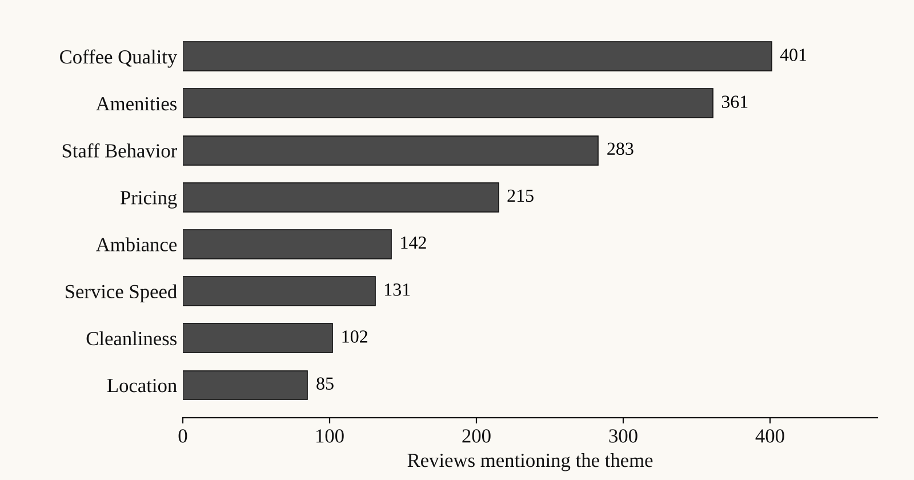
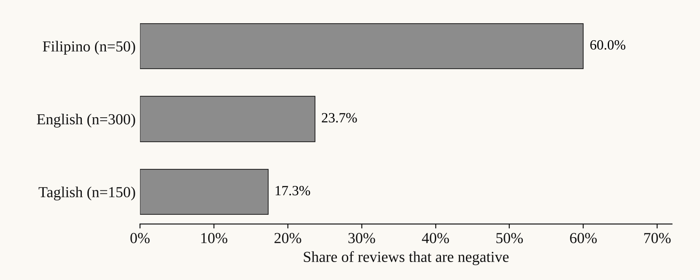

Projects · NLP · Sentiment analysis · Business intelligence
Customer Sentiment Intelligence Dashboard
Sentiment analysis of customer reviews and business-facing metrics for interpreting customer pain points and satisfaction trends.

Context
I wanted to see how raw customer reviews could be turned into something decision-makers can actually use.
Data
500 multilingual customer reviews, processed into a 27-column Power BI-ready dataset with sentiment labels, confidence scores, NPS categories, themes, and risk flags.
Method
I cleaned and processed the data in Python, applied sentiment-analysis workflows, and prepared dashboard-ready KPIs in Power BI.
Output
A sentiment dashboard pipeline with cleaned datasets and business-facing metrics.
Findings
Of the 500 reviews, 41.6% were positive, 33.0% neutral, and 25.4% negative, for an NPS of 30. Coffee quality, staff behavior, and amenities were the most frequent themes, and high-risk reviews were flagged for follow-up.
Reflection
Next, I’d like to explore deeper NLP methods like aspect-based sentiment analysis and real-time dashboards.
Figures

